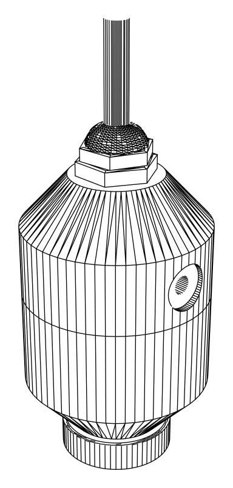
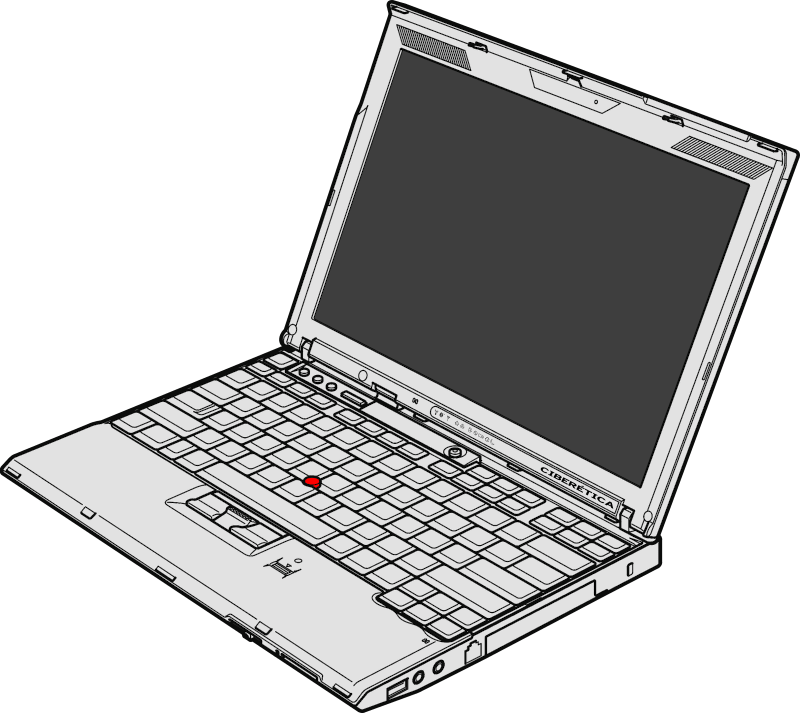
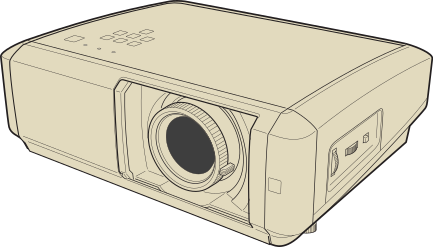

Sección de proyectos sobre Cine libre digital y Hardware y software libres.
Este artículo fue modificado por última vez el 15/05/2020

ZINE16 es una cámara libre, basada en EOS M + Magic Lantern con baterías 18650 impresa en 3D. Parte de un concepto de «autoconstrucción», defendiendo la idea de que cada uno puede y debe construir sus propias herramientas para capturar imagenes y sonidos, de una manera independiente y alternativa a la industria del cine. Promoviendo el digital como relevo natural y necesario a la película analógica, desde un punto de vista tanto ético como puramente estético. Adoptando para el negativo digital sistemas de trabajo generalmente relegados a la película tradicional, herencia de un cine basado en un arte profundamente humano, que poco tienen que ver con el consumo y la rentabilidad económica. ZINE16 es una cámara libre, basada en EOS M + Magic Lantern con baterías 18650 impresa en 3D. Parte de un concepto de «autoconstrucción», defendiendo la idea de que cada uno puede y debe construir sus propias herramientas para capturar imagenes y sonidos, de una manera independiente y alternativa a la industria del cine. Promoviendo el digital como relevo natural y necesario a la película analógica, desde un punto de vista tanto ético como puramente estético. Adoptando para el negativo digital sistemas de trabajo generalmente relegados a la película tradicional, herencia de un cine basado en un arte profundamente humano, que poco tienen que ver con el consumo y la rentabilidad económica.

ZINEMIC es un punto de encuentro en torno al cine libre. Parte de un concepto de «autoconstrucción», defendiendo la idea de que cada uno puede y debe construir sus propias herramientas para capturar imagenes y sonidos, de una manera independiente y alternativa a la industria del cine. Promoviendo el digital como relevo natural y necesario a la película analógica, desde un punto de vista tanto ético como puramente estético. Adoptando para el negativo digital sistemas de trabajo generalmente relegados a la película tradicional, herencia de un cine basado en un arte profundamente humano, que poco tienen que ver con el consumo y la rentabilidad económica.

Zine es un punto de encuentro en torno al cine libre. Parte de un concepto de «autoconstrucción», defendiendo la idea de que cada uno puede y debe construir sus propias herramientas para capturar imagenes y sonidos, de una manera independiente y alternativa a la industria del cine. Promoviendo el digital como relevo natural y necesario a la película analógica, desde un punto de vista tanto ético como puramente estético. Adoptando para el negativo digital sistemas de trabajo generalmente relegados a la película tradicional, herencia de un cine basado en un arte profundamente humano, que poco tienen que ver con el consumo y la rentabilidad económica.